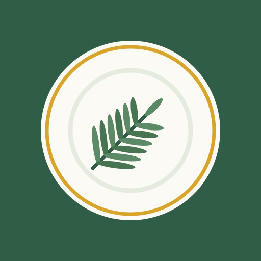

Adele's Recipe Book
Brand direction: Herb garden. Fresh, calm and homey: a rosemary sprig on a plate with a mustard rim. Home Screen label: "Adele's Recipes".
Icon

Sources: icons/icon.svg (full-bleed app icon; the art stays inside the maskable safe circle)
and icons/favicon.svg (simplified for small sizes). Regenerate the PNGs after editing:
cd icons
rsvg-convert -w 512 -h 512 icon.svg -o icon-512.png && cp icon-512.png icon-maskable-512.png
rsvg-convert -w 192 -h 192 icon.svg -o icon-192.png
rsvg-convert -w 180 -h 180 icon.svg -o apple-touch-icon.png
rsvg-convert -w 32 -h 32 favicon.svg -o favicon-32.pngCore colors
Rosemary #2f5d46
Warm white #fbfaf5
Mustard #d9a42b
Leaf #5d8a66
Ink #1e2a23
Mustard is decorative only (the rim, the header rule). It is too light for text on white.
App tokens (css/app.css)
| Token | Light | Dark | Used for |
|---|---|---|---|
--bg | #fbfaf5 | #131b16 | page |
--surface | #ffffff | #1c2620 | cards, inputs |
--text | #1e2a23 | #eef2ea | body text (14:1 / 15:1) |
--muted | #56635a | #a8b4aa | secondary text (6:1 / 7:1) |
--accent | #2f5d46 | #8fc7a0 | links, primary buttons, active tab |
--accent-soft | #e4ede5 | #26392d | notices, toggled buttons |
--control | #86938a | #66786d | input and button borders (3:1) |
--line | #dfe4d8 | #33433a | dividers, card borders |
--brand-mustard | #d9a42b | #e5b54a | header rule |
--star | #b07c12 | #e5b54a | ratings |
Type
The system sans-serif (San Francisco on iPad and Mac): no web fonts to download, so it works offline. Large sizes for reading at arm's length: 19–20px body, 24px in cooking mode. Headings bold, sentence case.
In use
Save planSwap
★★★★★